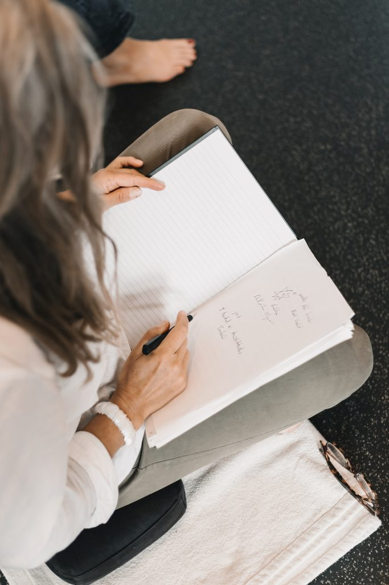
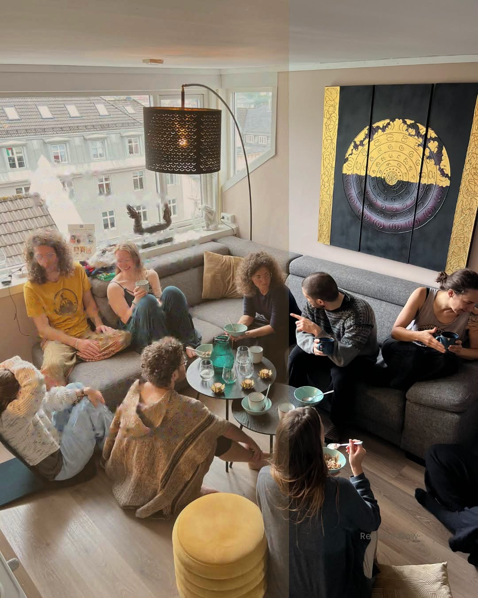

Det får du
Uddannelsen giver dig ramme, redskaber, støtte og fællesskab hele vejen. Klik dig igennem året – og se, hvad du får med.
 Start
StartOtte weekender med hvert sit emne
Hver weekend har fokus på ét tantrisk emne – fredag til søndag, otte gange på et år.
En masse øvelser, du kan bruge med det samme – i din personlige proces eller i dit arbejde.
Overblik over de vigtigste begreber og øvelser samt opsamling – så du altid kan finde tilbage.

StøtteDu står aldrig alene
Personlige samtaler med uddannelsens undervisere, når du undervejs har brug for sparring.
En fast lille gruppe, hvor I deler erfaringer og holder hinanden i processen mellem modulerne.

ProcesDin proces får ramme og retning
Et trygt forløb, der styrker din kontakt til krop, kraft og indre autoritet.
Du etablerer – eller udfolder – en praksis, der bærer dig, også efter uddannelsen.
Kropslig frigørelse og en større sans for den energimæssige kontakt mellem mennesker.
Noget, der rækker videre end året
Andre med samme interesse for tantrisk proces og spirituel udvikling – også efter året er omme.
Som gammel elev får du tilbud om efteruddannelsesmoduler og weekendtræf.
Efter ét år er du ikke den samme
Du har fået ramme, redskaber, støtte og netværk – og vejen kan fortsætte med efteruddannelse og weekendtræf.